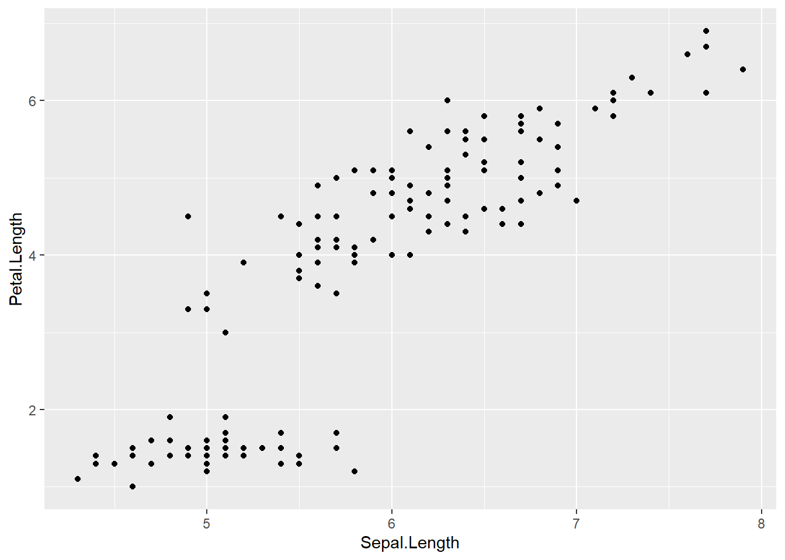
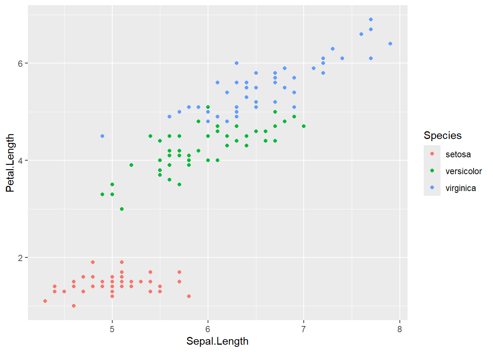
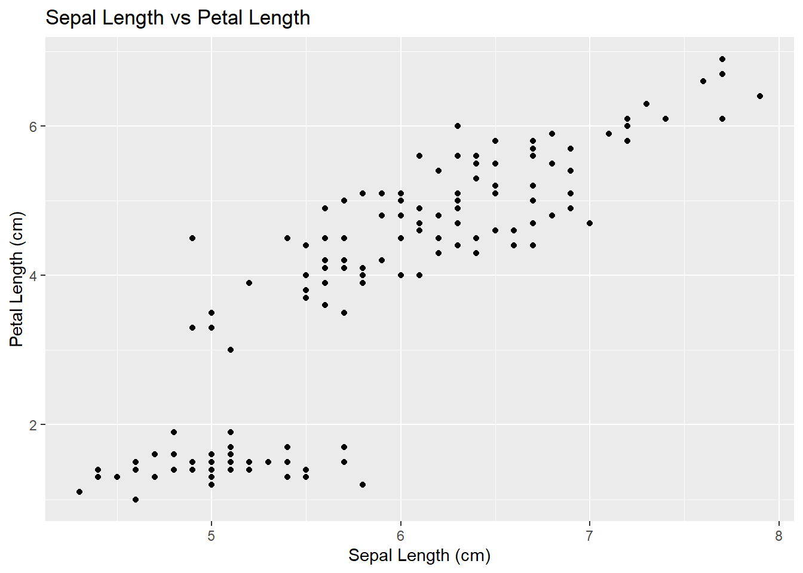
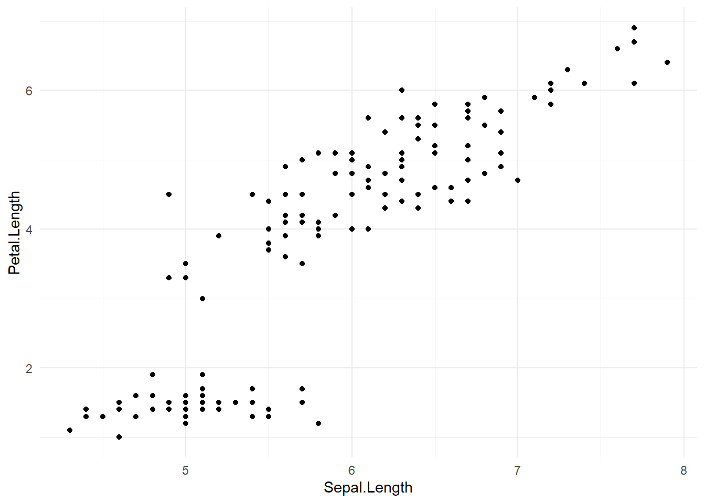

ggplot(data, aes(x, y)) +
geom_point()ggplot2 Fundamentals (Part 2): Structure, Graph Types, and Better Visualisations
ggplot2
Data Visualisation
A beginner-friendly guide to ggplot2. Learn the basic structure, how to choose the right graph based on your data, and how to make your visualisations more readable.
This is a three-part series. Other series can be viewed here:
When creating graphs in R, one of the most widely used tools is ggplot2.
However, many beginners feel overwhelmed when they first encounter ggplot. The code can look long, and it’s often unclear what each part is doing.
The good news is that the core idea behind ggplot is actually very simple.
In this article, we will cover:
- The basic structure of ggplot
- How to choose the right type of graph
- How to make your graphs easier to read
This article combines key ideas from Parts 2–4 of my ggplot series in Japanese (R seems to be a lot less common in Japan, hence my ggplot blog posts are more detailed in Japanese).
Basic Structure of ggplot
Most ggplot code follows this structure:
data + aesthetics + geometryIn other words:
data + how it looks + type of graphIn code, this looks like:
Here, you are specifying two main things:
- Which data to use
- What type of graph to create
Even with just these three components, you can create a basic plot.
Example: Scatterplot
Using the built-in iris dataset:
ggplot(iris, aes(x = Sepal.Length, y = Petal.Length)) +
geom_point()
This creates a scatterplot where:
Sepal.Lengthis mapped to the x-axisPetal.Lengthis mapped to the y-axis
Choosing the Right Type of Graph
One of the most important steps in data visualisation is choosing the correct graph.
This depends on the type of variables you are working with.
There are two main types:
- Continuous variables (measured values, e.g. length, weight)
- Discrete variables (categories or counts)
For example, in the iris dataset:
Sepal.LengthandPetal.Lengthare continuousSpeciesis discrete
Common Graph Choices
| Data Type | Graph | ggplot |
|---|---|---|
| Discrete (1 variable) | Bar chart | geom_bar() |
| Continuous (1 variable) | Histogram | geom_histogram() |
| Continuous (1 variable) | Density Plot | geom_density() |
| Continuous (2 variables) | Scatterplot | geom_point() |
| Discrete + Continuous | Boxplot | geom_boxplot() |
Choosing the right graph depends on what you want to explore:
- Distribution → histogram
- Relationship → scatterplot
- Comparison across groups → boxplot
Making Your Graphs More Readable
Even with the same data, small changes can significantly improve readability.
Let’s start with a simple scatterplot:
ggplot(iris, aes(x = Sepal.Length, y = Petal.Length)) +
geom_point()
This shows the data, but it can be improved.
Adding Color
ggplot(iris, aes(x = Sepal.Length, y = Petal.Length, color = Species)) +
geom_point()
This helps distinguish different groups.
Improving Labels
ggplot(iris, aes(x = Sepal.Length, y = Petal.Length)) +
geom_point() +
labs(title = "Sepal Length vs Petal Length",
x = "Sepal Length (cm)",
y = "Petal Length (cm)")
Adding labels makes the graph easier to interpret.
Using Themes
ggplot(iris, aes(x = Sepal.Length, y = Petal.Length)) +
geom_point() +
theme_minimal()
Themes help simplify the visual appearance.
Key Takeaways
- ggplot is built on a simple structure: data + aesthetics + geometry
- Choosing the right graph depends on: your variable types (continuous vs discrete)
- Small improvements like color, labels, and themes can make your graphs much clearer
Final Thoughts
The most important step is not writing code - it’s understanding your data.
Once you have that, ggplot becomes much easier to use.
If you’re just getting started, focus on:
- Understanding your data
- Choosing the right graph
- Improving clarity step by step
These skills will make a big difference in how effectively you communicate your analysis.
Reference Materials
This page explains all about ggplot2 code in depth:
https://rstudio.github.io/cheatsheets/html/data-visualization.html